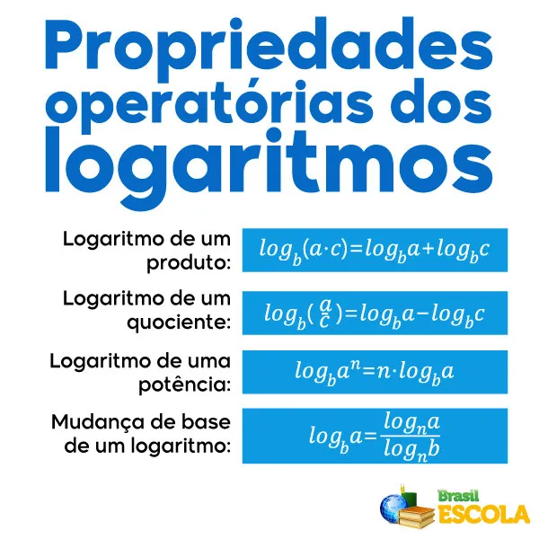
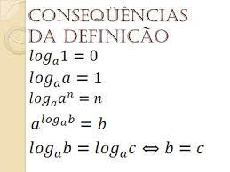

Portfólio de Matemática
Mateus Mazon Parcianello

Nesse trimestre não tivemos muitos conteúdos, então não há de fato muito o que falar, mas algo que sem dúvidas incomodou foram as propriedades do log, que eu sempre esquecia delas e como utilizá-las quando mais precisava, então eu boto elas aqui por uma certa falta de atenção e memória que complicaram o estudo com elas. Eu até consegui decorar a quarta propriedade, mas não as outras.
Acho que posso botar também as consequencias da definição dos logaritmos, basicamente pelo mesmo motivo que as propriedades logaritmicas estão aqui.
Propriedades logarítmicas
Consequências da definição
Links obtidos clicando nas imagens